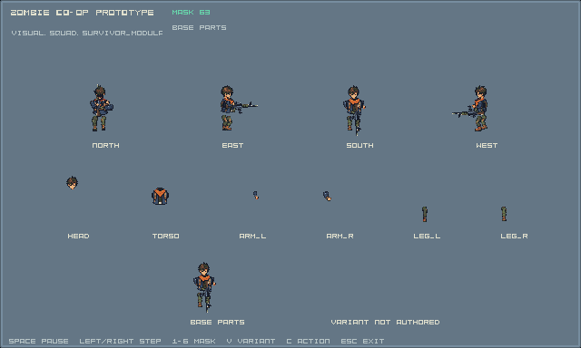
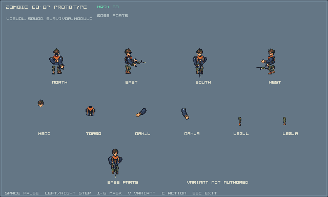
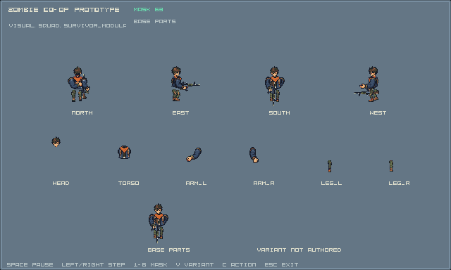
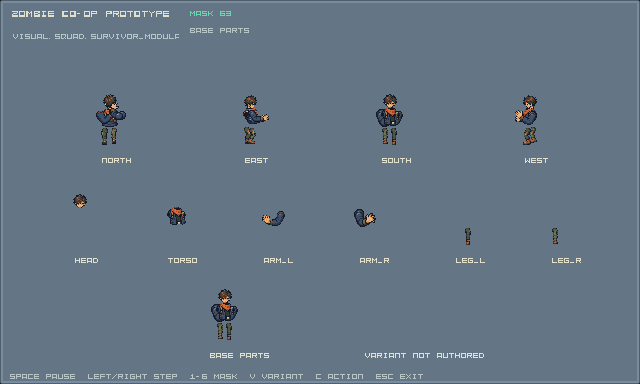
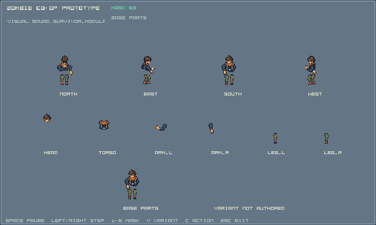
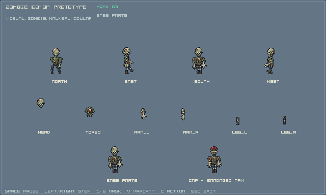
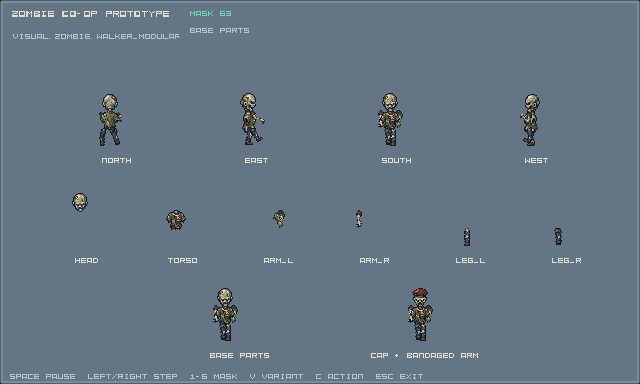
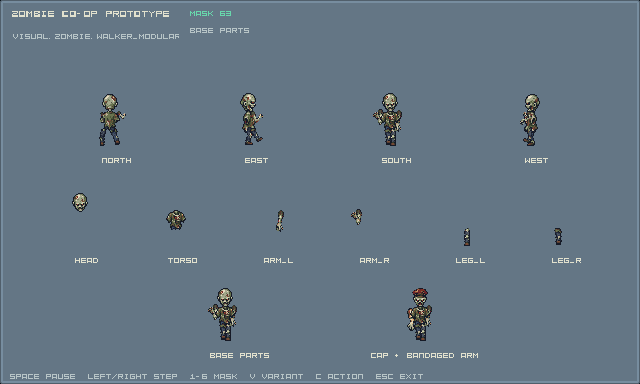
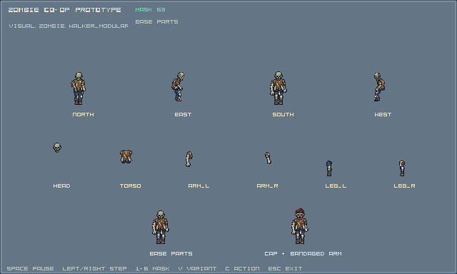
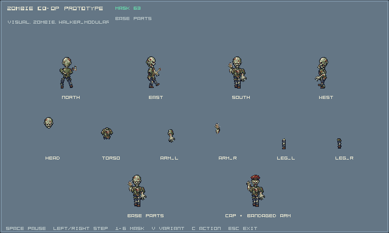

R1b — existing renderer captures
38 capture cases qua C++ loader/resource/sampler/renderer hiện có. Mỗi ảnh có bốn hướng và các part riêng.
Đây là stationary review; chưa nghiệm thu moving actions, toàn mask matrix hoặc encounter.
Native/source review · Capture report + executable hash ·
Generated review manifest ·
Handoff
survivor / idle Pose 0 — 0.3s Weapon axis/overlap, joints and readable actions require visual review. survivor / walk Pose 0 — 0.075s Weapon axis/overlap, joints and readable actions require visual review. survivor / fire Pose 0 — 0.03s 
Weapon axis/overlap, joints and readable actions require visual review. survivor / aim Pose 0 — 0.075s Weapon axis/overlap, joints and readable actions require visual review. survivor / reload Pose 0 — 0.05s 1 — 0.15s 2 — 0.25s 3 — 0.35s 4 — 0.45s 5 — 0.55s 
Weapon axis/overlap, joints and readable actions require visual review. survivor / melee Pose 0 — 0.05s 1 — 0.15s 2 — 0.25s 3 — 0.35s 4 — 0.45s 5 — 0.55s 
Weapon axis/overlap, joints and readable actions require visual review. survivor / hurt Pose 0 — 0.05s 1 — 0.15s 2 — 0.25s 3 — 0.35s 
Weapon axis/overlap, joints and readable actions require visual review. survivor / death Pose 0 — 0.05s 1 — 0.15s 2 — 0.25s 3 — 0.35s 4 — 0.45s 5 — 0.55s 
Weapon axis/overlap, joints and readable actions require visual review. walker / idle Pose 0 — 0.075s 
Weapon axis/overlap, joints and readable actions require visual review. walker / walk Pose 0 — 0.05s Weapon axis/overlap, joints and readable actions require visual review. walker / claw_windup Pose 0 — 0.035s 1 — 0.115s 2 — 0.21s 
Weapon axis/overlap, joints and readable actions require visual review. walker / hurt Pose 0 — 0.025s 
Weapon axis/overlap, joints and readable actions require visual review. walker / death Pose 0 — 0.03s 
Weapon axis/overlap, joints and readable actions require visual review. walker / claw_active Pose 0 — 0.05s 1 — 0.15s 
Weapon axis/overlap, joints and readable actions require visual review. walker / claw_recovery Pose 0 — 0.05s 1 — 0.15s 2 — 0.25s Weapon axis/overlap, joints and readable actions require visual review.